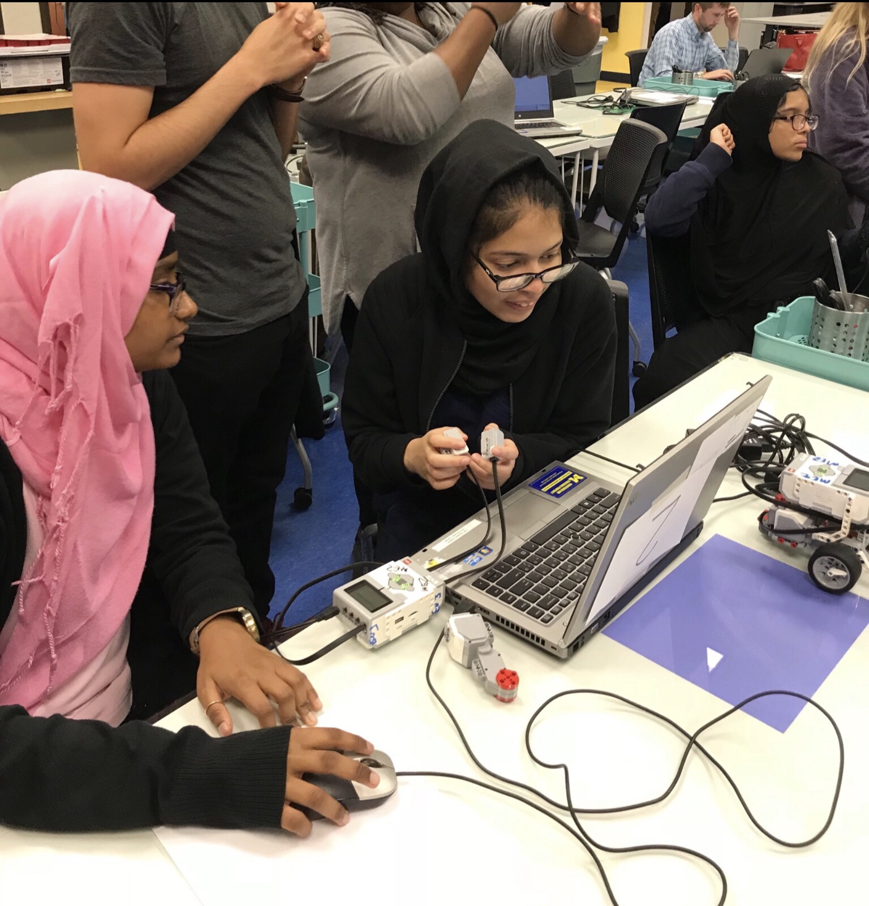

Hi! My name is Mahbuba Sumiya, and I'm excited to be a part of Introduction to Digital Fabrication course. Just some fun facts about me, I'm a rising senior at Benjamin Carson High School of Science and Medicine. Outside of school, I am part of broadcast journalism and Michigan Key Club E-board team. I can also be found at my local Starbucks, where I spend way too much of my time.
Final Project Thoughts:
For my end of the course final project, I hope to create a mini robot that can climb and still be able to balance on window to clean dirts. As of now, I'm still a beginner in programming, but I willing to learn as I'm going through the Intro to Digital Fabrication course and creating the final project.